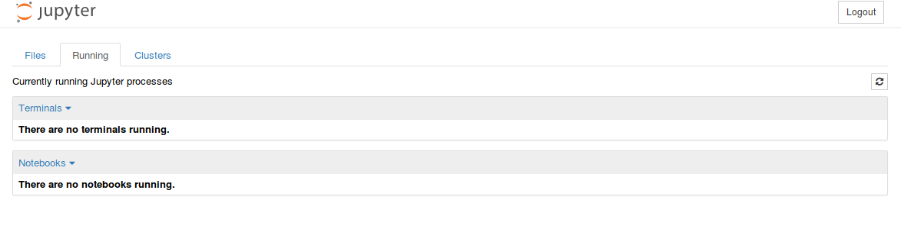
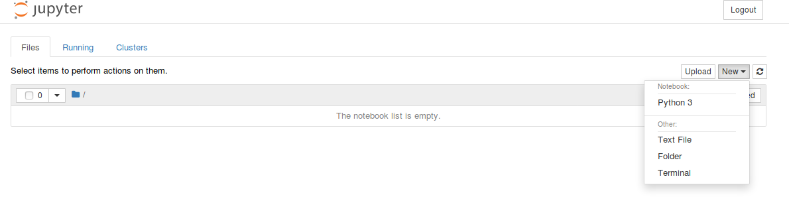

Practical 1
Contents
Practical 1#
Goals#
Parsing and working with CSV, TSV and JSON files
Querying external data sources
Data analyses
Exercises#
Installation and setting up of pip, scikit-learn and jupyter
Parsing and reading CSV/TSV files
Parsing and reading JSON files
Querying external data sources (Query endpoints and API)
Performing classical data analyses
Screenshots#
Screenshots have been provided so that you can check and compare whether the output you have is the same as what we want from the step (or exercise) in question.
Exercise 1#
Installation#
Run the following commands on your virtual machines
pip
For installing pip, you need to run the following commands on your terminal:
Note: Please note that all the lines starting with $ need to be run on the terminal.
$ sudo apt update
$ sudo apt install python3-dev
$ sudo apt install python3-pip
Installation of virtualenv
$ sudo apt install virtualenv
Installation inside virtualenv
$ virtualenv --system-site-packages -p python3 env
$ source env/bin/activate
Installation of jupyter
$ python3 -m pip install --upgrade --force-reinstall --no-cache jupyter
Installation of scikit-learn
$ python3 -m pip install scikit-learn
Installation of numpy
$ python3 -m pip install numpy
Installation of pandas
$ python3 -m pip install pandas
Installation of matplotlib
$ python3 -m pip install matplotlib
Hello World!#
If your installation is successful, you can run the following command to clone the repository
$ git clone https://github.com/johnsamuelwrites/DataMining
$ cd DataMining
Run Jupyter Notebook (or Lab)
$ jupyter notebook
or
$ jupyter lab
A new page will appear on your browser and you will see the following
image 
Click on the tab ‘Running’. You see no notebooks running (if it’s the first time you are running jupyter). 
Go back to the ‘Files’ tab and click on New and choose Python3 under Notebook 
A new tab will open as shown below. Write the following code in the cell
print("Hello World!")

You can go to any cell and press ‘Run’
By default, your Notebook is named ‘Untitled’. You can rename it as shown below, by clicking on the name ‘Untitled’ and by giving a new name.

Now go back to the ‘Files’ tab and you can see the renamed notebook.
You can click on your notebook at any time to continue working.

Now let’s continue working on your current Notebook. Write the following code to check whether scikit is properly installed.
The code below shows the available datasets from scikit.
from sklearn import datasets
print(datasets.__all__)

Now, you are ready to go!!
Note:, You can stop Jupyter notebook at any point by typing “Ctrl+c” on the terminal and by pressing ‘y’ to confirm shutdown.
Practise the (optional) exercises given in practicals 0.
Exercise 2#
Most of the time, we work with CSV (comma-separated values) files for data analysis. A CSV file consits of one or more lines and each line has one or more values separated by commas. One can consider every line as a row and every value in a row as a column value. The first row is sometimes used to describe the column names.
Copy the file pl.csv to your current working directory (where you are running Jupyter: TP1) and use the following code to parse the csv file. Note the column names and datatypes (U100, i4), where U100 corresponds to 100-character unicode string and i4 corresponds to 32-bit signed integer.
Please check the complete list of dtypes here.
import numpy as np
dataset = np.loadtxt(
"../../data/pl.csv", # Change this value to the path of your CSV file
dtype={"names": ("name", "year"), "formats": ("U100", "i4")},
skiprows=1, # skip the first row, since it's the header
delimiter=",", # the separator is comma since it is a CSV file
encoding="UTF-8", # UTF-8 encoding
)
print(dataset)

CSV support in numpy (Ref: (https://docs.scipy.org/doc/numpy/reference/generated/numpy.loadtxt.html)) is different from Python’s default CSV reader (Ref: (https://docs.python.org/3.9/library/csv.html)) because of its capability to support the data types (Ref: (https://docs.scipy.org/doc/numpy/reference/arrays.dtypes.html)). Before continuing, take a deep look at numpy.loadtxt (Ref: (https://docs.scipy.org/doc/numpy/reference/generated/numpy.loadtxt.html)).
Copy the file pl.tsv to your current working directory and use the following code to parse the tsv file.
import numpy as np
dataset = np.loadtxt(
"../../data/pl.tsv", # Change this value to the path of your CSV file
dtype={"names": ("name", "year"), "formats": ("U100", "i4")},
skiprows=1,
delimiter="\t",
encoding="UTF-8",
)
print(dataset)
Note the changes in the above code compared to the previous one. A TSV file is a tab-separated file, i.e., the column values are separated by a tab ((\t)).
For counting the number of rows in your dataset, you can use len()
print(len(dataset))
You can also display the output of variables and methods in a notebook without print()
len(dataset)
Exercise 3#
Most of the external data sources may provide their data in JSON format. Our next exercise is to parse JSON files. Copy the file pl.json to your current working directory and use the following code to parse the JSON file. In this exercise, we use Pandas python package (Ref: (https://pandas.pydata.org/pandas-docs/stable/)) to parse the JSON file to obtain a Pandas DataFrame (Ref: (https://pandas.pydata.org/pandas-docs/stable/generated/pandas.DataFrame.html)). Try using methods like transpose (Ref: (https://pandas.pydata.org/pandas-docs/stable/generated/pandas.DataFrame.transpose.html#pandas.DataFrame.transpose)), count (Ref: (https://pandas.pydata.org/pandas-docs/stable/generated/pandas.DataFrame.count.html#pandas.DataFrame.count)) etc.
Before continuing this exercise, please practice working with Pandas. Take a look at 10 minutes to pandas (Ref: (https://pandas.pydata.org/pandas-docs/stable/getting_started/10min.html)).
from pandas import json_normalize
import pandas as pd
import json
data = json.load(open("../../data/pl.json"))
dataframe = json_normalize(data)
print(dataframe)
And the output without print()
dataframe
To display the values of the column year:
dataframe["year"]
To display the values of the column languageLabel:
dataframe["languageLabel"]
Getting some important information like count, min, max using describe()
dataframe.describe()
To display the unique values of the column year:
dataframe["year"].unique()
To display the unique values of the column languageLabel:
dataframe["languageLabel"].unique()
To sort the values by one or more columns:
dataframe.sort_values(["year"])
dataframe.sort_values(["year", "languageLabel"])
dataframe.sort_values(["languageLabel"])
To obtain the data types of the columns:
dataframe.dtypes
Exercise 4#
In this exercise, we will take a look at how to download data from external data sources using special query interfaces. Take for example, above data was obtained from Wikidata query:** (https://query.wikidata.org/)) interface. See the screenshot given below.

Given below is the code to read data from an external data source. Use this url: (https://query.wikidata.org/sparql?query=SELECT ?languageLabel (YEAR(?inception) as ?year)%0AWHERE%0A%7B%0A%20%20%23instances%20of%20programming%20language%0A%20%20%3Flanguage%20wdt%3AP31%20wd%3AQ9143%3B%0A%20%20%20%20%20%20%20%20%20%20%20%20wdt%3AP571%20%3Finception%3B%0A%20%20%20%20%20%20%20%20%20%20%20%20rdfs%3Alabel%20%3FlanguageLabel.%0A%20%20FILTER(lang(%3FlanguageLabel)%20%3D%20%22en%22)%0A%7D%0AORDER%20BY%20%3Fyear%0ALIMIT%20100&format=json).
import urllib.request
import json
import pandas as pd
url = "https://query.wikidata.org/sparql?query=SELECT%20%3FlanguageLabel%20(YEAR(%3Finception)%20as%20%3Fyear)%0AWHERE%0A%7B%0A%20%20%23instances%20of%20programming%20language%0A%20%20%3Flanguage%20wdt%3AP31%20wd%3AQ9143%3B%0A%20%20%20%20%20%20%20%20%20%20%20%20wdt%3AP571%20%3Finception%3B%0A%20%20%20%20%20%20%20%20%20%20%20%20rdfs%3Alabel%20%3FlanguageLabel.%0A%20%20FILTER(lang(%3FlanguageLabel)%20%3D%20%22en%22)%0A%7D%0AORDER%20BY%20%3Fyear%0ALIMIT%20100&format=json"
response = urllib.request.urlopen(url)
responsedata = json.loads(response.read().decode("utf-8"))
array = []
for data in responsedata["results"]["bindings"]:
array.append([data["year"]["value"], data["languageLabel"]["value"]])
dataframe = pd.DataFrame(array, columns=["year", "languageLabel"])
dataframe = dataframe.astype(dtype={"year": "<i4", "languageLabel": "<U200"})
print(dataframe)
dataframe
dataframe["year"].describe()
dataframe["languageLabel"].describe()
dataframe.dtypes
Exercise 5#
This final exercise will use some basic data analyses. Continuing with the code in Exercise 1.4, le’s count the number of programming languages released in a year.
grouped = dataframe.groupby("year").count()
grouped
You can also use multiple aggregate functions using agg()
grouped = dataframe.groupby('year').agg(['count'])
grouped
Till now, we worked with tables having two columns. Now we focus on tables with three columns (programming language, year, paradigm). Copy the file plparadigm.json to your working directory. And test the following program.
from pandas.io.json import json_normalize
import pandas as pd
import json
jsondata = json.load(open("../../data/plparadigm.json"))
array = []
for data in jsondata:
array.append([data["year"], data["languageLabel"], data["paradigmLabel"]])
dataframe = pd.DataFrame(array, columns=["year", "languageLabel", "paradigmLabel"])
dataframe = dataframe.astype(
dtype={"year": "int64", "languageLabel": "<U200", "paradigmLabel": "<U200"}
)
grouped = dataframe.groupby(["year", "paradigmLabel"]).agg(["count"])
grouped
Now test the following program. Compare the difference in output.
grouped = dataframe.groupby(["paradigmLabel", "year"]).agg(["count"])
grouped
Your next goal is to run the following query to get the population information of different countries (limited to 10000 rows). Run the following query on Wikidata query service and download the JSON file.
SELECT DISTINCT ?countryLabel (YEAR(?date) as ?year) ?population
WHERE {
?country wdt:P31 wd:Q6256; #Country
p:P1082 ?populationStatement;
rdfs:label ?countryLabel. #Label
?populationStatement ps:P1082 ?population; #population
pq:P585 ?date. #period in time
FILTER(lang(?countryLabel)="en") #Label in English
}
ORDER by ?countryLabel ?year
LIMIT 10000
Now, compute and display the following information (using various operations available in pandas library (Ref: (https://pandas.pydata.org/pandas-docs/stable/10min.html))):
The population of countries in alphabetical order of their names and ascending order of year.
The latest available population of every country
The country with the lowest and highest population (considering the latest population)
Your next goal is to run the following query to get information related to scientific articles published after 2010 (limited to 10000 rows). Run the following query on Wikidata query service and download the JSON file. It gives you the following information related to the scientific article: title, main subject and publication year.
SELECT ?title ?subjectLabel ?year
{
?article wdt:P31 wd:Q13442814; #scientific article
wdt:P1476 ?title; #title of the article
wdt:P921 ?subject; #main subject
wdt:P577 ?date. #publication date
?subject rdfs:label ?subjectLabel.
BIND(YEAR(?date) as ?year).
#published after 2010
FILTER(lang(?title)="en" &&
lang(?subjectLabel)="en" && ?year>2010)
}
LIMIT 10000
Now, compute and display the following information (using various operations available in pandas library (Ref: (https://pandas.pydata.org/pandas-docs/stable/10min.html))):
The number of articles published on different subjects every year.
Top subject of interest to the scientific community every year(based on the above query results).
Top 10 subjects of interest to the scientific community (based on the above query results) since 2010.
Hint:Take a look at functions groupby, reset_index, head, tail, sort_values, count of Pandas
Note: If you get time-out errors, please change the LIMIT to some lower values (1000, 2000, 5000).